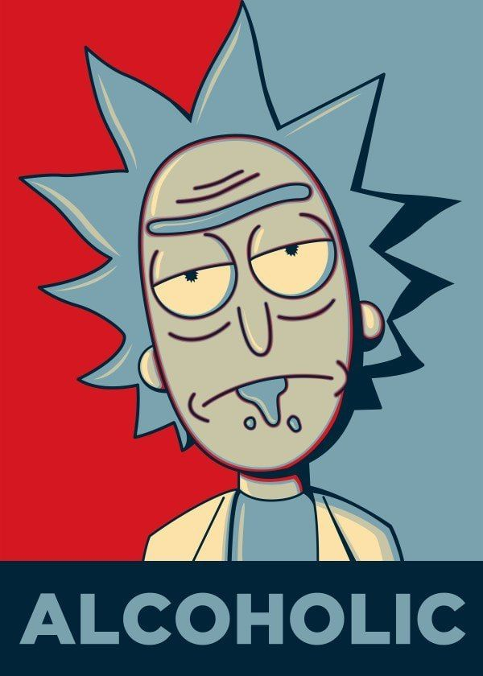
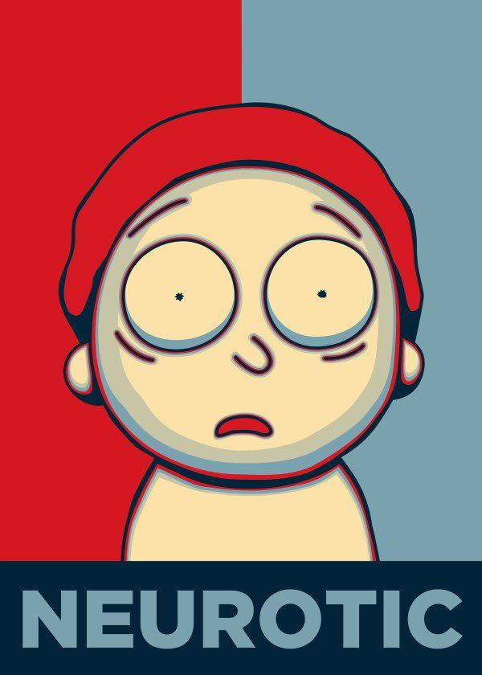
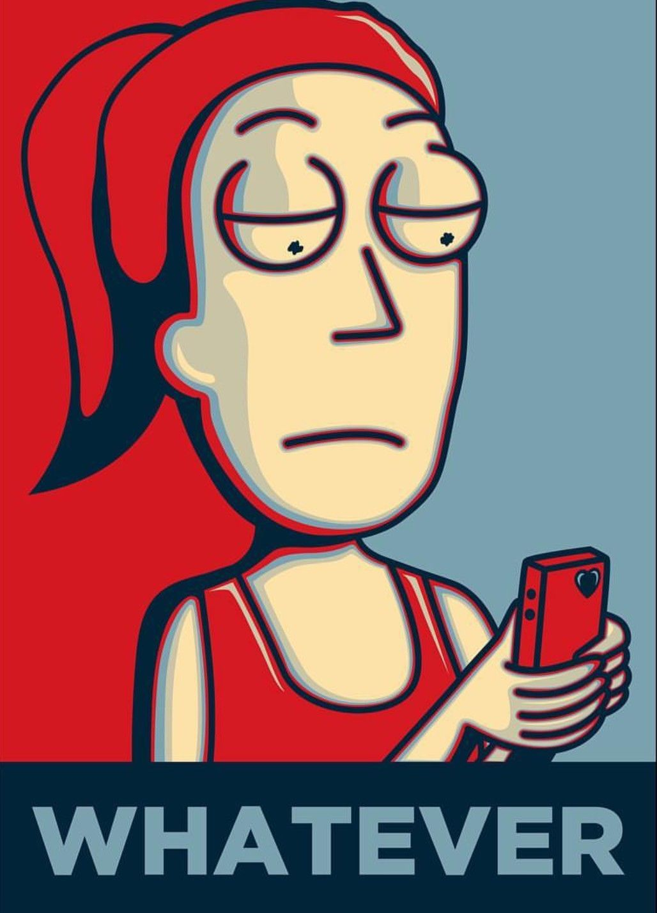
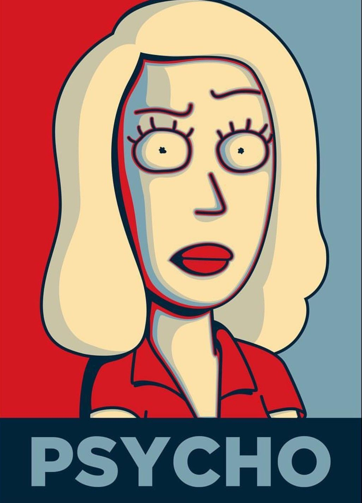
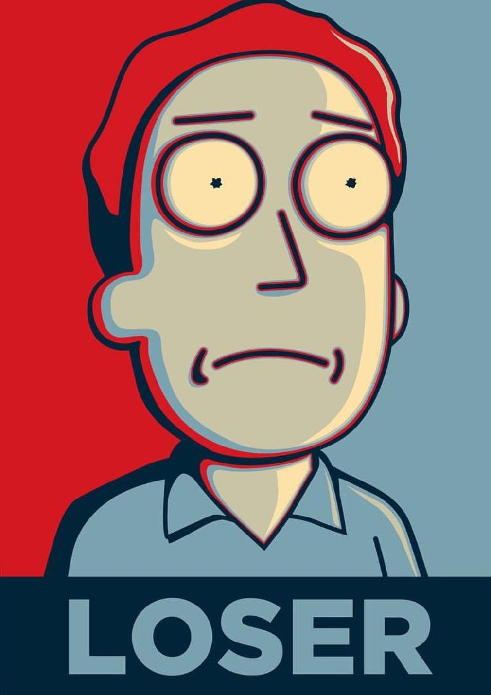

O show gira em torno das aventuras dos membros da família Smith, que consiste nos pais Jerry e Beth, seus filhos Summer e Morty, e o pai de Beth, Rick Sanchez, que mora com eles como hóspede. Rick é um cientista excêntrico e alcoólatra, que evita muitas convenções costumeiras como escola, casamento, amor e família. Ele frequentemente vai em aventuras com seu neto de 14 anos de idade, Morty. As aventuras ocorrem em um número infinito de realidades, com os personagens viajando para outros planetas e dimensões através de portais e do carro voador de Rick. Durante a série várias áreas sociais e ideológicas são abordadas de forma de zombaria, e é por isso que a animação é considerada inteligente por alguns e idiota por outros.
---
--- TEMPORADAS ---
Temporadas
Nº de episódios
Temporada 1
11 episódios
Temporada 2
10 episódios
Temporada 3
10 episódios
Temporada 4
¿ (° - °) ?
Personagens
Rick Sanchez - Um cientista alcoólatra de 60 anos extremamente inteligente que é capaz de construir máquinas e acessórios tecnológicos que o permitem viajar por diversas dimensões e realidades paralelas. Ele quase nunca pensa nas consequências de suas ações e possui um comportamento excêntrico e um estilo de vida niilista. É pai de Beth, sogro de Jerry e avô de Morty e Summer.
Morty Smith - Neto facilmente influenciável e com dificuldades escolares de 14 anos de Rick, parece ser a quem este demonstra maior afeto e expectativa dentro da família, o que faz com que ele sempre acabe por acompanhar Rick em suas aventuras, enquanto descobre o que é o próprio mundo real e reflete sobre a existência das coisas.
Summer Smith - Tem 17 anos e é a irmã mais velha de Morty, uma adolescente convencional muitas vezes superficial, que é obcecada por melhorar seu status com seus colegas. Ela ocasionalmente expressa inveja por Morty sempre acompanhar Rick em suas aventuras interdimensionais. Na segunda temporada, ela acompanha Rick e Morty com mais freqüência.
Beth Smith - É filha de Rick, esposa de Jerry e mãe de Summer e Morty, aos 34. Como seu pai, ela bebe muito e é bastante inteligente, mas ao contrário dele, é sempre responsável. Ela trabalha como cirurgiã de cavalos e muitas vezes se arrepende de não ter sido médica. Ela frequentemente tem discussões com seu marido, vendo uma incompatibilidade em ambos.
Jerry Smith - Pai inseguro de Summer e Morty, 35 anos que desaprova fortemente a influência de Rick sobre seu filho. Ele trabalhou em uma agência de publicidade de baixo nível, até que foi demitido por incompetência e agora está desempregado. Tem uma personalidade infantil e impressionável.
Filosofia
O vídeo NÃO é meu.
Existencialismo:
No existencialismo, o ponto de partida do indivíduo é caracterizado pelo que se tem designado por "atitude existencial", ou uma sensação de desorientação e confusão face a um mundo aparentemente sem sentido e absurdo.
Nilismo:
É uma doutrina filosófica cuja principal característica é uma visão cética radical em relação às interpretações da realidade. É a desvalorização e a morte do sentido, a ausência de finalidade e de resposta ao “porquê”.
Determinismo:
É a teoria filosófica de que todo acontecimento (inclusive o mental) é explicado pela determinação, ou seja, por relações de causalidade.
Absurdismo:
Essa filosofia advém do paradoxo entre a busca individual por sentido e a falta de sentido provida pelo universo. Como seres que buscam significado para a vida em um mundo sem sentido, humanos possuem três maneiras de solucionar este dilema: suicidio, religião/espiritualidade ou aceitar o absurdo.
Morty:
“Ninguém existe por um propósito. Ninguém pertence a um lugar. Todo mundo vai morrer. Vem assistir TV.”
Arthur Schopenhaeuer:
"The life of every individual is really always a tragedy, but gone through in detail, it has the character of a comedy."